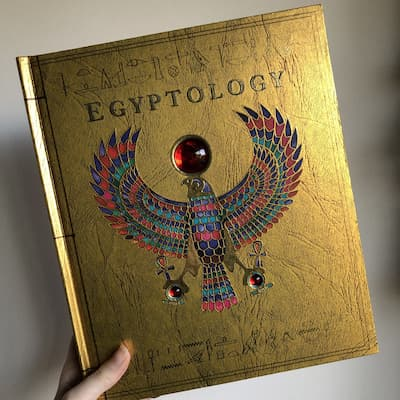
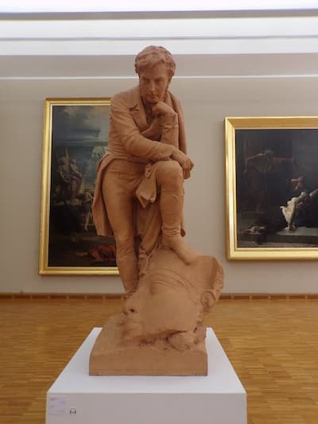

The Enduring Legacy of Champollion
Jean-François Champollion’s work forever changed our understanding of ancient Egypt. His decipherment of hieroglyphs opened the door to the voices of a lost civilization, inspiring generations of linguists and historians.
Impact on Egyptology
- Founded the discipline of modern Egyptology.
- Enabled scholars to translate thousands of ancient Egyptian texts.
- Inspired new discoveries and archaeological exploration across Egypt.
Tributes and Memorials
“To decipher a civilization is to give it life again.”
— Inscription at Champollion’s tomb, Père Lachaise Cemetery, Paris